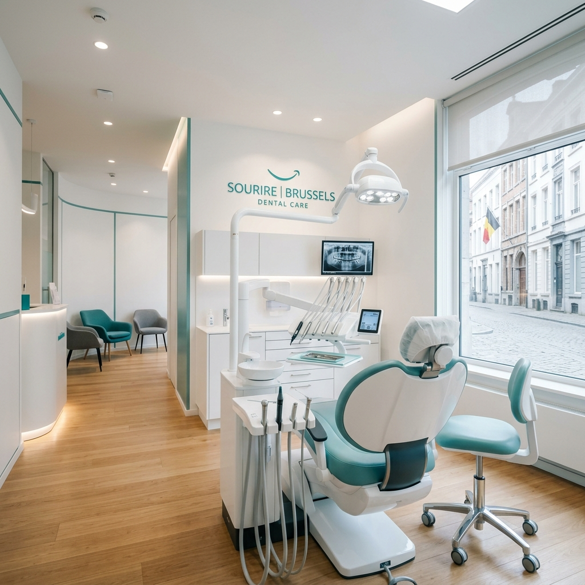
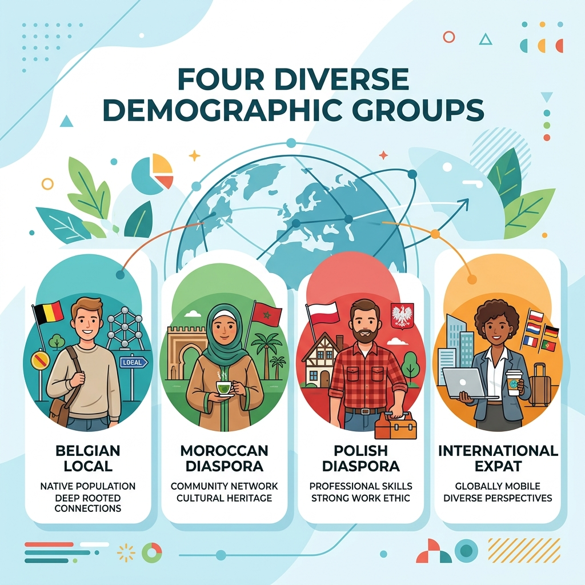
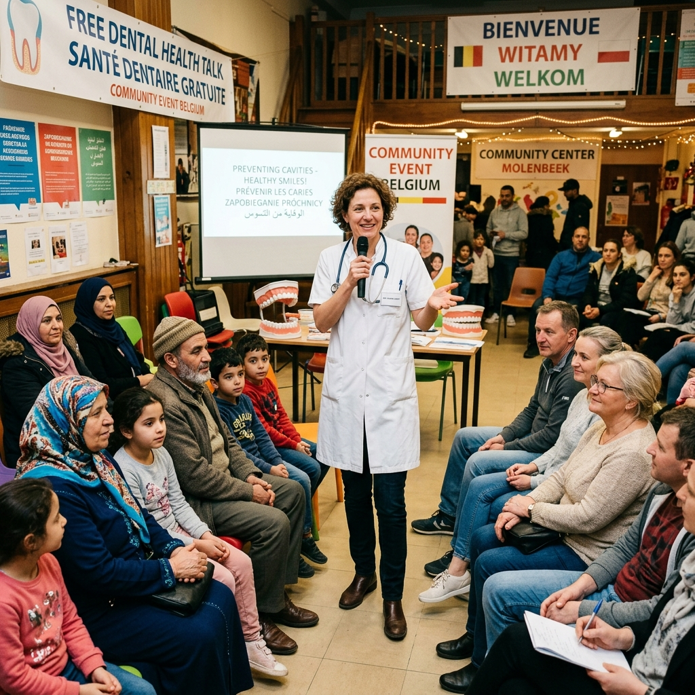

Sociological & legislative dynamics of dental marketing and organic patient acquisition — navigating strict deontology, demographic diversity, and evolving consumer behaviour.
Report Roadmap
Practitioners face a genuine dilemma — the need to build a patient base versus a legal arsenal that strictly restricts commercial advertising.
• Services & specialisations info
• Academic qualifications
• Informational website & directories
• Google Search ads (neutral copy)
• Organic educational content
• "Best dentist" comparative claims
• Before & After images (Act 6/7/2011)
• Patient testimonials as marketing
• Discounts / promotional pricing
• Facebook/Instagram paid ads

Objective informational communication is permitted. Commercial solicitation and patient-hunting ("Ronselen") are absolutely prohibited — risk of license revocation or disciplinary proceedings.
All dentists must display rates in waiting rooms AND on websites using standardised INAMI stickers. Pricing ambiguity = immediate patient distrust and potential regulatory breach.
In 2024, 50.4% of active dentists are Non-conventionné (vs 30% in 2013), entitling them to charge Suppléments d'honoraires not reimbursed by mutual funds — a major patient communication challenge.
A single Belgian dentist's marketing campaign forced an entire nation to rewrite its advertising laws.
Legal position, mechanism, and strategic risk of each platform in the Belgian regulatory context.
Patient actively typed "emergency dentist Brussels." Ad = digital information card.
LEGALLY SAFE
Rules: Neutral copy only. Name + specialty + location + hours. No enthusiastic language. Medical license documentation required by Google.
Patient was NOT searching. Algorithm pushes ad based on demographics = unsolicited medical solicitation = "Ronselen."
HIGH DISCIPLINARY RISK
Risk of action from Ordre des Dentistes / VVT / CMD. Only organic educational posting acceptable.
Understanding how each patient segment thinks, what motivates a booking, and what barriers prevent them from seeking care.

Legal, rational, high-ROI strategies to build a sustainable patient base — without any prohibited paid push advertising.

Each strategy below feeds the next, creating a compounding organic growth engine — legally compliant, culturally intelligent, and sustainable.
Building a solid patient base does not go through circumventing laws — the path lies in intelligent, organic integration into Belgium's social fabric.
"Through simultaneous execution of Local SEO, educational community partnerships, authoritative content, ethical review management, absolute pricing transparency, and intelligent use of intermediary platforms — the clinic can navigate legal obstacles with finesse and guarantee a continuous, growing patient flow."
— Belgium Dental Healthcare Research Report 2024–2026Insurance pathways & full pricing transparency via mandatory INAMI rate display.
Preventive guidance & cultural communication that builds lasting community trust.
Cover the gaps of diasporic medical tourism — emergencies & complication follow-ups.
Financial transparency, English speed, and frictionless digital booking experience.
BELGIUM DENTAL HEALTHCARE MARKETING REPORT · 2024–2026 · CONFIDENTIAL RESEARCH